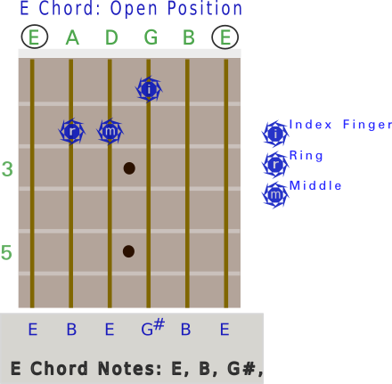
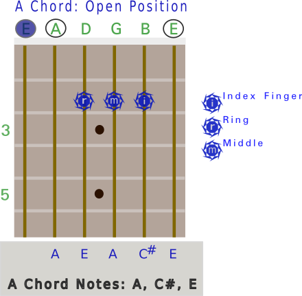
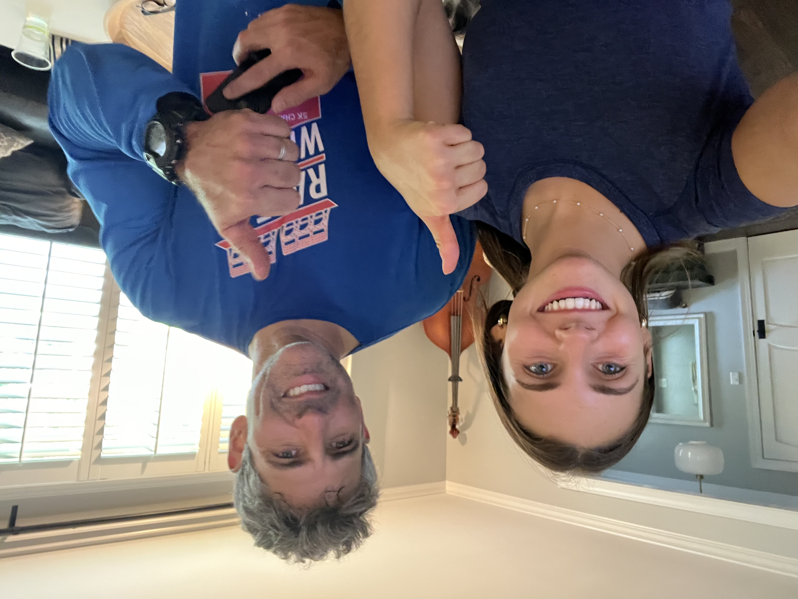

Beginner Guitar Lesson
Lesson Links:
Introduction Fundamentals Open Chords What to Do Next? Barre Chords Supplementary Notes Conclusion
Introduction Fundamentals Open Chords What to Do Next? Barre Chords Supplementary Notes Conclusion
Introduction
I learned to play the guitar over the years, starting in college, but have never taken formal lessons.
Learning how to play the guitar can be frustrating and difficult at first. The position of the hand and fingers on the fretboard is uncomfortable but soon that goes away.
It actually hurts in the beginning, but soon your hands will become accustomed to pressing strings and holding chord shapes. Trust me, just keep going.
At the end of this lesson however, you'll be playing along to your favorite songs!
Fundamentals
When starting out, there are a few things that everyone must learn:- How to tune your guitar
- How to hold the guitar in your lap
- How to place your hand to form chord shapes
- How to strum the guitar
Once you get past these four steps, now it's time to dive into playing!
Open Chords
In the "open" position, there are a number of chords to learn. But for now, let's just concentrate on 2 chords - the E and the A chords. Once you know these two chords, we'll be able to leverage these shapes and play a bunch more chords shortly!
 
There's a fair bit of information here, namely each chord has just 3 individual notes but some are repeated. Take a minute to digest it but really all that matters is being comfortable playing the chords. You might wonder why we don't play the low E on the A chord. That's just convention to play the root note (A) as the lowest note. This gets into "inversions", which we won't get into just yet.
What's Next?
Now, many people get frustrated with the next sequence of steps. And there are many many ways to proceed to learn to play. The most important thing is that you don't get frustrated and end up not playing at all.
Now, the following sequence is highly debatable which place to start. But with the aforementioned goal of keeping it fun, I think it makes sense to learn just a couple of chord shapes first, which you can then leverage to roughly play along with hundreds of songs!!
Barre Chords
So, to make a long story short, I think learning the 2 basic Barre chords is the best bang for your buck when starting out.
Why?
- Even though these chord shapes are somewhat difficult for beginners to learn, pretty much every chord shape is difficult at first
- The second reason, is that with just these 2 chord shapes, you'll be able to play along with tons of songs right away.
Now, you won't be able to play the more intricate parts of songs, but that's totally ok. So, the 2 chord shapes are the E shape and the A shape. If you already know these chords in the open position, think of these shapes as the exact same chords, but shifted up the fretboard. And when you shift chords up the fretboard, you're essentially playing more chords!
So shifting the E chord up to the 3rd fret, you now are playing a G chord. But you can't just take the same shape you made in the open position and play it on the 3rd fret because in the open position; the Nut is actually doing some work for you. So, that's what a Barre chord is, is you're using your index finger to replace the nut, as you move up the fretboard.
So here's the next two shapes to learn. Based off the E and A shapes we learned earler:


With the open E chord and just the first shape (E) you're now able to play E (open position), F (index finger on 1st fret), G (index on 3rd fret) A (5th fret), B (7th fret), C (8th fret) and D (10th fret)!! Pretty cool, huh?
Supplementary Notes
The E shape by the way, starts and utilizes the 6th string as it's root. This means for an E chord or E shaped Barre chord, you can strum all 6 strings and not worry about your strumming hand too much.
But, as when playing an open A chord, you only strum the top 5 strings. Now, as you move up from the open position into the Barre shape, you can now play A (open position), B (index finger on 2nd fret), C (3rd fret), D (5th fret), E (7th fret), F(8th fret) and G (10th fret).
Note, the 12th fret everything starts repeating from the open position notes. Which is to say, if you strum your guitar without fretting any notes whatsoever and then fret all strings on the 12th fret, it should sound similar, just an octave higher.
So, a little more on chords. Chords are basically composed of 3 notes, and when played together, sound good. Many times on the guitar, we'll be playing "chords" but in reality a few of the 3 base notes are repeated across the 6 strings, as we saw earlier.
For example, the 1st and 6th strings are tuned to E so if you play those two string together on the same fret (or in the open position for an E chord), you are playing duplicate E notes, but it's still an E chord.
So, that's fine. But just know that as you progress, you'll learn more about how to find these 'triads' in many different areas up and down the fretboard which opens up many opportunities to layer in sounds and notes.
Now, there's 7 notes in the western music - A through G. And if you put a major chord together, the three notes you'll be playing are the 1, 3 and 5 notes of that particular scale.
So if you're playing an A chord, the 3 notes in that scale you're playing are A (1), C# (3), and E (5)
Conclusion
And that's a wrap! Now, go turn on Franklin's Tower and see if you can play along with it using the two Barre chords you just learned. You'll be playing on just the 5th and 3rd frets, chords A, G and D. And then back from D to G back to A.Fire on the Mountain is pretty easy too!!
